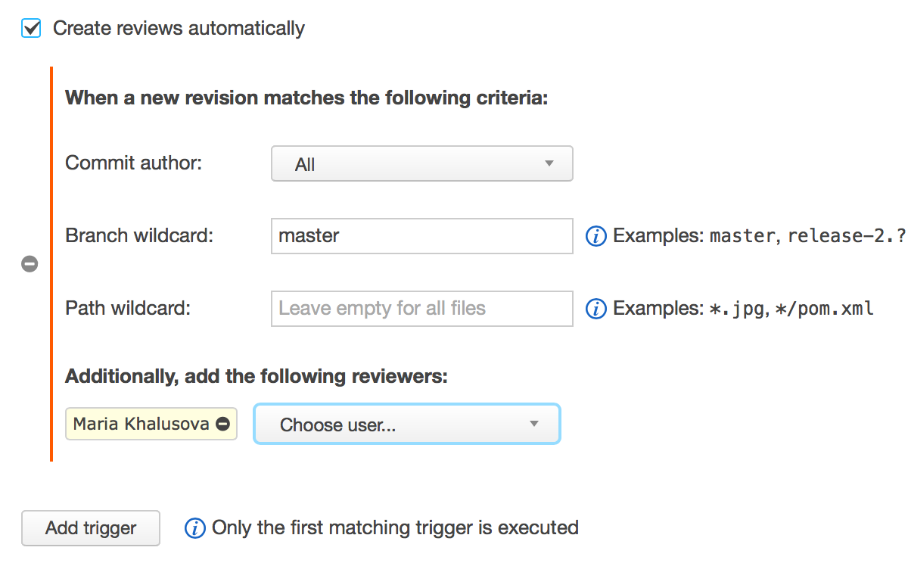

Polyglot Code Review Tool
Code insight for Java, PHP, JavaScript and Kotlin
Ideal for:
- Post-commit code review
- Feature branch review
- Pull requests review

Better understand code review changes
Code-aware navigation in your browser for projects written in PHP, Java, JavaScript and Kotlin

See potential problems introduced
Static code analysis and code analysis summary for projects written in PHP, Java, JavaScript and Kotlin

Automate your code review process
Upsource provides flexible triggers to create code reviews automatically.

Track your code review progress
Upsource shows you only the changes you haven’t seen yet and keeps track of read/unread files in a code review.

Have better code review discussions
Categorize and prioritize code review discussions by applying labels. Resolve discussions when concerns are addressed.

Keep track of project updates
See latest revisions, branches and merges.

Find anything in project history
Search by commits, authors, paths and more.

Explore file history
Learn who changed files, when and why.

See prior discussions

Share links to code
Link to any code selection in any revision

Participate in code review from IDE
Upsource comes with a plugin for any JetBrains IDE, e.g. IntelliJ IDEA, PhpStorm. The plugin lets you participate in discussions and manage your code reviews without leaving the comfort of your IDE.

Learn more about Upsource
jetbrains.com/upsource
@upsource_jb